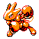
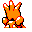

#201
Scizor
BugSteel
This Pokémon's pincers, which contain steel, crush any hard object they get a hold of to bits
Base stats Total 443
HP70
Attack130
Defense100
Speed75
Special68
Details
- Species
- Scissors
- Height
- 5'11"
- Weight
- 260.0 lb
- Catch rate
- 25
- Base exp
- 200
- Growth
- Medium Fast
Level-up moves
LevelMoveType
StartQuick AttackNormal
Lv 7LeerNormal
Lv 9Pin MissileBug
Lv 11Bug BiteBug
Lv 26TwineedleBug
Lv 27Steel WingSteel
Lv 28LungeBug
Lv 30Metal ClawSteel
Lv 32Razor Wind
Lv 38X ScissorBug
Lv 40Swords DanceNormal
Evolution
Evolves from Scyther
TM / HM
TM02 Razor WindTM03 Swords DanceTM06 ToxicTM09 Take DownTM10 Double-EdgeTM15 Hyper BeamTM16 Metal ClawTM18 CounterTM31 MimicTM32 Double TeamTM39 SwiftTM44 RestTM50 SubstituteHM01 CutHM02 FlyHM04 Strength